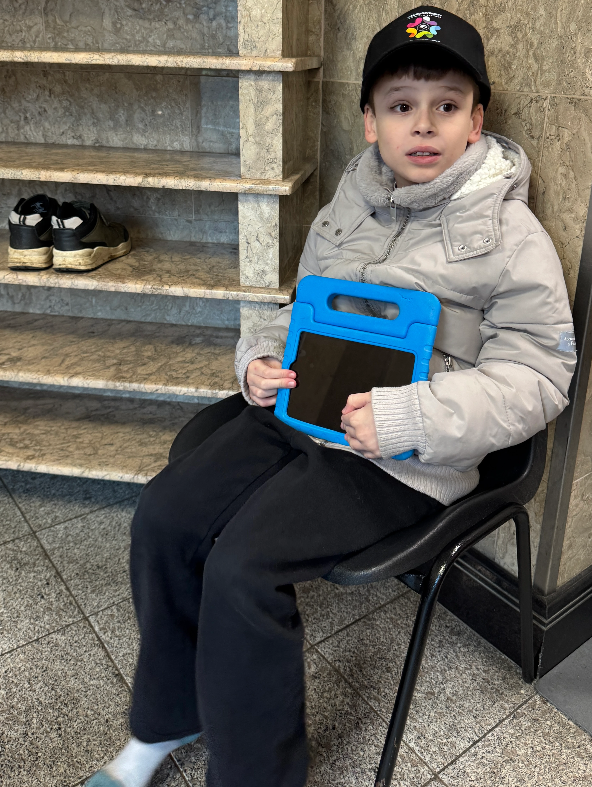

<a class="skip-to-content-link" href="#content"> Skip to content </a>
<div class="grid-wrapper">
  <div class="header-content" tabindex="0"><app-header></app-header></div>
  <div class="menu-content" tabindex="0">
    <app-menu></app-menu>
  </div>

  <div class="left-content" id="content" tabindex="0">
    <router-outlet></router-outlet>
  </div>
  <div class="media-content" tabindex="0">
    <app-media>
      </app-media>
  </div>
  <div class="footer-content" tabindex="0"><app-footer></app-footer></div>
</div>
